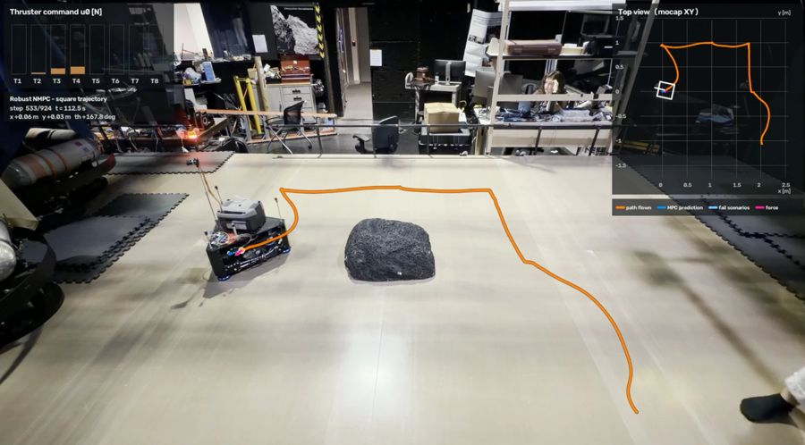

Current research

Scenario-based MPC for free-flyer inspection with thruster failures
- ProblemA small free-flyer inspecting an uncrewed outpost must stay collision-safe even when thrusters fail, deciding on board within every control step.
- ApproachOne shared input sequence that satisfies every constraint across a tree of failure scenarios, picking the most critical failures to hedge each step and adding residual-based fault identification.
- Results69.3% clean success over 648 runs with up to four failed thrusters, against 26.4% for nominal MPC and on par with a controller told the failure in advance. On JPL's GSAT air-bearing sled: 14 of 19 runs on target with thrusters disabled, vs 3 of 9 for nominal.